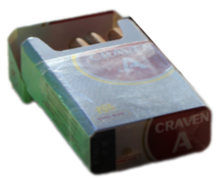
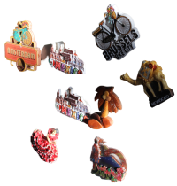

Passe la souris sur les différents éléments de la coco house pour en savoir plus.

L'allume-feu pour la gazinière, que Roland prend pour allumer ses clopes (voir quelques images plus loin) alors qu'il a 1000 briquets.
La brosse à dents de Roland. Il aime bien la laisser dehors.

Les clopes de Roland. Pareil, elles restent souvent dehors.
Ça, c'est le couvercle du cendrier. Il est assorti aux chandeliers.
Les lunettes de Roland. Enfin, une des nombreuses paires de Roland. Il y en a sur le plan de travail dans la cuisine, sur la petite table en marbre du jardin, dans la salle de bain et parfois sur la petite table du salon.

Un extrait de la collection de magnets sur le frigo, qui ont sans doute été achetés tous ensemble (sauf le cocotier évidemment).
Une des pierres qui décorent la maison. Celle-ci est posée sur le goulot d'une bouteille en verre bleu foncé à la forme atypique.
Deux chats. Celui de droite m'a déjà volé une part de pizza. Celui de gauche me victimise moins et vient dire bonjour à la porte de la cuisine le soir.